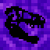

Prehistoric Rift

Prehistoric Rift is an addon that focuses on adding prehistoric creatures and enhancing the game. For now, its in really early development, so don't expect much except maybe a few new mobs and mediocre animations.
As of now, the addon is available on MCPEDL. You can also download it here.
Stuff you might want to check out
Credits
The ff are people who have contributed to the addon in some way or another
- Vivek - Textures for most of the tribute items, exotic meats, dodo meats, and command staff
- Professor Squiggles - Journal Drawing for Tyrannosaurus and Triceratops, Textures for Utahraptor Claw
- The Gaming Baryonyx - Journal Drawing for Stegosaurus and Dodo, old textures for dodo meats
- DTRaptor - Old textures for command staff and exotic meats, pack icon
- AGSucho - Textures for Stego